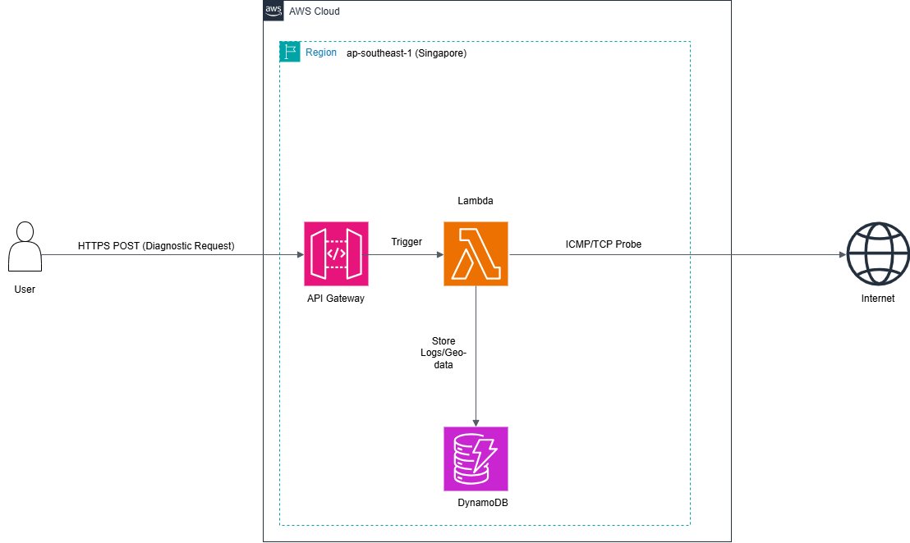
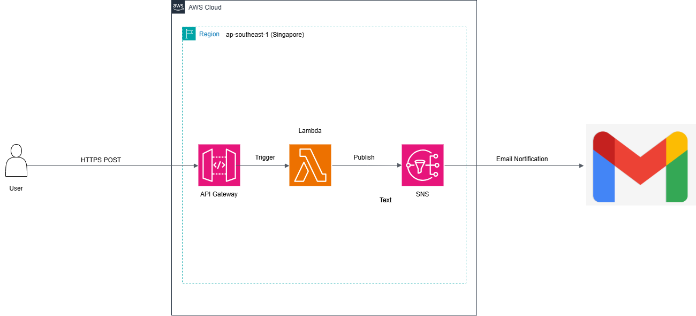

CONFIDENTIAL // INTERNAL USE ONLY
Engineering Documentation
Enterprise-grade Serverless Infrastructure & Architectural Decision Records
MODULE 1: NET_PROBE
ProductionDistributed Network Diagnostic and Geo-Auditing Engine designed for real-time latency analysis.

Figure 1.1: Event-driven Serverless Architecture (Region: ap-southeast-1)
Tech Stack Highlights
- Ingestion: AWS API Gateway (RESTful)
- Compute: AWS Lambda (Python 3.x) - Non-blocking probes
- Persistence: DynamoDB (On-demand + TTL enabled)
- Security: IAM Roles with Least Privilege (PoLP)
Data Workflow
STEP 1 Client sends ICMP/TCP request via API Gateway.
STEP 2 Lambda executes network probe across region boundary.
STEP 3 Results are structured & persisted to DynamoDB.
STEP 4 Response returned to client in < 200ms.
MODULE 2: FACE_BIOMETRIC
RefactoringAI-Enhanced Verification System integrating Computer Vision & LLMs. (Currently optimizing concurrency).

Figure 2.1: AI Pipeline integrating Rekognition & Bedrock
Tech Stack Highlights
- Orchestration: AWS Lambda (Payload normalization)
- Vision AI: Amazon Rekognition (Vector extraction)
- Gen AI: Amazon Bedrock (Claude 3 Haiku)
Intelligence Pipeline
STEP 1 Base64 image payload hits API Gateway.
STEP 2 Lambda coordinates async calls to AI services.
STEP 3 Bedrock synthesizes security report.
MODULE 3: SOS_BEACON
Mission CriticalTactical Emergency Uplink bridging HTML5 Geolocation with Cloud Notification systems.

Figure 3.1: High-availability Broadcast System
Tech Stack Highlights
- Telemetry: HTML5 Geolocation API (Client-side)
- Broadcast: Amazon SNS (Fan-out pattern)
- Logic: Lambda (Google Maps deep-linking generation)
Emergency Flow
STEP 1 Browser captures High-Precision GPS Coords.
STEP 2 API Gateway ingests distress signal via Webhook.
STEP 3 SNS blasts SMS/Email to Admins instantly.
SECURITY COMPLIANCE NOTICE
To strictly adhere to AWS Security Best Practices regarding credential management and infrastructure protection, the source code repository is currently PRIVATE.
I am available to provide a full code walkthrough and explain the Serverless Architecture & Implementation details during the technical interview.